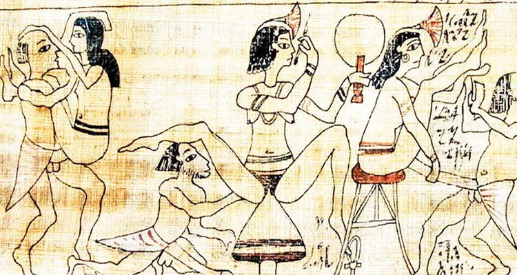
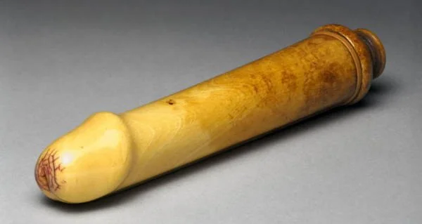
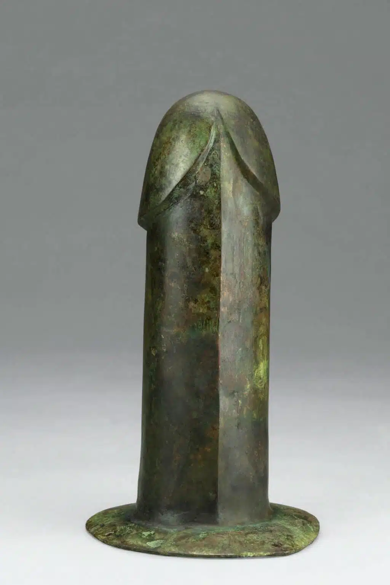
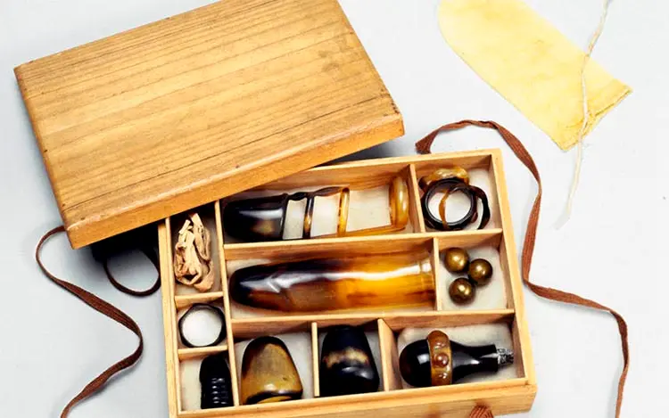
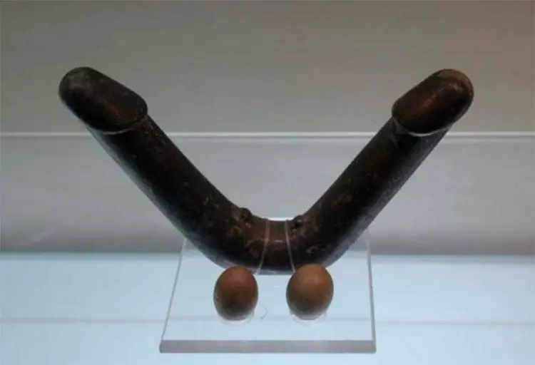
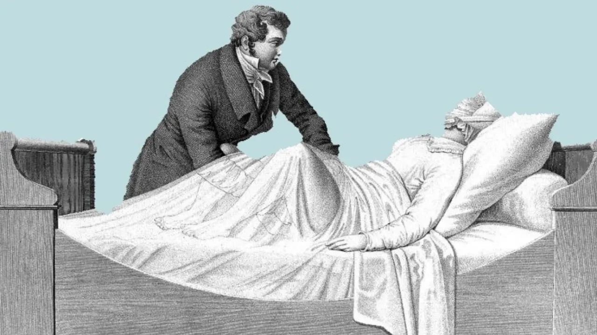

Consoladores
A traves de los años
Consolador más antiguo conocido (tamaño y pulido sugieren función sexual), encontrado en Alemania. Falo de piedra pulida de 20 cm de largo y 3 cm de ancho (uno de los hallazgos más antiguos)
Paleolítico Superior, hace unos 28,000 años
Se muestra el uso de consoladores de materiales como madera, arcilla, e incluso penes disecados de cachalotes por medio de representaciones en papiros y cerámicas.

Antiguo Egipto (3000 a.C.)
Los consoladores eran hechos a base de heces de camello secas y recubiertas por resina, resistentes y suaves.
Oriente Medio
Sus consoladores eran de piedra, madera o cuero lubricados con aceite de oliva (se le llamaba Olisbos), evidenciado en cerámicas del siglo VI a.c. donde muestran mujeres usándolos.

Grecia
Dejo consoladores de bronce y jade en tumbas de la realeza (Se explica como posible reflejo de creencia del sexo como equilibrio entre el yini y el yang).

Dinastía Han china (206 a.c - 220 d.c)
Mediante este se celebraba el placer sin tabúes y mostraba consoladores de marfil y madera.

Japón - Arte erotico del siglo XVII
Europa: La Iglesia condenó los juguetes sexuales como símbolos de lujuria.
Japón (cultura más abierta): Refinaron los diseños con madera laqueada y texturas variadas.
Italia (1400): Se documentaron consoladores de cuero y piedra.
China: Uso de anillos hechos de cuerdas o párpados de cabra para prolongar la erección (se piensa en los hombres y su desempeño-placer-necesidades).
Edad media
Italia: Las tiendas de placer ofrecían consoladores personalizados.
Japón: Se popularizó el arte Shungan (arte erotico).
Europa: La represión sexual limitó la aceptación pública de juguetes sexuales.

Renacimiento - Avances materiales - siglo XV
Revolución industrial
Alrededor de 1880, se inventó el vibrador por el médico británico Joseph Mortimer Granville. El prototipo inicial, un vibrador electromecánico, fue creado por un hombre pensando en necesidades asociadas a la terapia y no precisamente al placer, ya que se utilizaba para tratar dolores musculares y como tratamiento para la llamada "histeria femenina".
La histeria femenina era caracterizada por síntomas como insomnio o irritabilidad, asociados a la frustración sexual, siendo esto un antecedente y posiblemente una consecuencia de la deficiencia que existía para satisfacer y producir placer sexual en las mujeres.

Posteriormente, empezó a darse una venta normalizada en catálogos, así como se hacía con los electrodomésticos, convirtiéndose en uno de los primeros aparatos domésticos electrificados.
Materiales
Con la vulcanización del caucho, surgieron los primeros consoladores de goma, más accesibles aunque de baja calidad. En la década de 1960, el ingeniero Ted Marche introdujo los consoladores de plástico, un material menos tóxico y más acorde a estándares médicos. Posteriormente, Gosnell Duncan desarrolló los de silicona, más seguros y duraderos, inicialmente pensados también para personas con discapacidades. Hasta ese momento, no se registra una participación significativa de mujeres en su creación ni un diseño centrado en su perspectiva.
Era Moderna - Tecnología y libertad
Durante el siglo XX, especialmente con la revolución sexual de las décadas de 1960 y 1970, se dio una apertura progresiva hacia la aceptación de los juguetes sexuales, marcando un cambio importante en la forma en que se entendía el placer y la libertad sexual. En la actualidad, esta industria ha crecido y se ha diversificado ampliamente, existen múltiples tipos, como vibradores, succionadores de clítoris, bolas chinas, tapones anales y anillos vibradores, entre otros; sus funciones también varían, incluyendo penetración, estimulación, simulación y potenciación del placer.
También han evolucionado en diseño, con variedad de colores, formas (no solo fálicas) y materiales (suaves, duros o mixtos), así como en tecnología, pasando de objetos simples a dispositivos eléctricos y programables. Esto ha impulsado un mercado global valorado en miles de millones de dólares, influenciado por la aceptación de la comunidad LGBTQ+ y el interés femenino en el bienestar sexual.